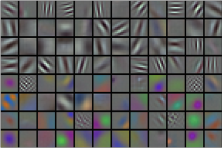

%load_ext d2lbook.tab
tab.interact_select(['mxnet', 'pytorch', 'tensorflow', 'jax'])Réseaux de neurones convolutifs profonds (AlexNet)
Bien que les CNN fussent bien connus dans les communautés de vision par ordinateur et d’apprentissage automatique suite à l’introduction de LeNet [LeCun.Jackel.Bottou.ea.1995], ils n’ont pas immédiatement dominé le domaine. Bien que LeNet ait obtenu de bons résultats sur de petits jeux de données précoces, la performance et la faisabilité de l’entraînement des CNN sur des jeux de données plus grands et plus réalistes restaient à établir. En fait, pendant une grande partie du temps écoulé entre le début des années 1990 et les résultats décisifs de 2012 [Krizhevsky.Sutskever.Hinton.2012], les réseaux de neurones étaient souvent surpassés par d’autres méthodes d’apprentissage automatique, telles que les méthodes à noyau [Scholkopf.Smola.2002], les méthodes d’ensemble [Freund.Schapire.ea.1996] et l’estimation structurée [Taskar.Guestrin.Koller.2004].
Pour la vision par ordinateur, cette comparaison n’est peut-être pas tout à fait exacte. C’est-à-dire que, bien que les entrées des réseaux convolutifs consistent en des valeurs de pixels brutes ou légèrement traitées (par exemple, par centrage), les praticiens ne fourniraient jamais de pixels bruts à des modèles traditionnels. Au lieu de cela, les pipelines de vision par ordinateur typiques consistaient à concevoir manuellement des pipelines d’extraction de caractéristiques, tels que SIFT [Lowe.2004], SURF [Bay.Tuytelaars.Van-Gool.2006] et les sacs de mots visuels [Sivic.Zisserman.2003]. Plutôt que d’ apprendre les caractéristiques, celles-ci étaient conçues. La majeure partie des progrès provenait d’idées plus ingénieuses pour l’extraction de caractéristiques d’une part, et d’une compréhension approfondie de la géométrie [Hartley.Zisserman.2000] d’autre part. L’algorithme d’apprentissage était souvent considéré comme une réflexion après coup.
Bien que certains accélérateurs de réseaux de neurones fussent disponibles dans les années 1990, ils n’étaient pas encore suffisamment puissants pour créer des CNN profonds multicanaux et multicouches avec un grand nombre de paramètres. Par exemple, la GeForce 256 de NVIDIA de 1999 était capable de traiter au plus 480 millions d’opérations en virgule flottante, telles que des additions et des multiplications, par seconde (MFLOPS), sans aucun cadre de programmation significatif pour des opérations au-delà des jeux. Les accélérateurs d’aujourd’hui sont capables de réaliser plus de 1000 TFLOPS par appareil. De plus, les jeux de données étaient encore relativement petits : l’OCR sur 60 000 images de basse résolution de \(28 \times 28\) pixels était considéré comme une tâche extrêmement difficile. À ces obstacles s’ajoutaient des astuces clés pour l’entraînement des réseaux de neurones, notamment les heuristiques d’initialisation des paramètres [Glorot.Bengio.2010], les variantes astucieuses de la descente de gradient stochastique [Kingma.Ba.2014], les fonctions d’activation non écrasantes [Nair.Hinton.2010] et les techniques de régularisation efficaces [Srivastava.Hinton.Krizhevsky.ea.2014], qui manquaient encore.
Ainsi, plutôt que d’entraîner des systèmes de bout en bout (du pixel à la classification), les pipelines classiques ressemblaient davantage à ceci :
- Obtenir un jeu de données intéressant. À l’époque, ces jeux de données nécessitaient des capteurs coûteux. Par exemple, l’ Apple QuickTake 100 de 1994 arborait une résolution impressionnante de 0,3 mégapixel (VGA), capable de stocker jusqu’à 8 images, le tout pour un prix de 1000 $.
- Prétraiter le jeu de données avec des caractéristiques conçues à la main basées sur certaines connaissances en optique, géométrie, d’autres outils analytiques, et occasionnellement sur les découvertes fortuites d’étudiants diplômés chanceux.
- Faire passer les données par un ensemble standard d’extracteurs de caractéristiques tels que le SIFT (scale-invariant feature transform) [Lowe.2004], le SURF (speeded up robust features) [Bay.Tuytelaars.Van-Gool.2006], ou n’importe quel autre nombre de pipelines réglés à la main. OpenCV fournit toujours des extracteurs SIFT à ce jour !
- Envoyer les représentations résultantes dans votre classificateur préféré, probablement un modèle linéaire ou une méthode à noyau, pour entraîner un classificateur.
Si vous parliez à des chercheurs en apprentissage automatique, ils vous répondraient que l’apprentissage automatique était à la fois important et beau. Des théories élégantes prouvaient les propriétés de divers classificateurs [boucheron2005theory] et l’optimisation convexe [Boyd.Vandenberghe.2004] était devenue le pilier pour les obtenir. Le domaine de l’apprentissage automatique était florissant, rigoureux et éminemment utile. Cependant, si vous parliez à un chercheur en vision par ordinateur, vous entendriez une histoire très différente. La sale vérité de la reconnaissance d’images, vous diraient-ils, est que les caractéristiques, la géométrie [Hartley.Zisserman.2000,hartley2009global] et l’ingénierie, plutôt que de nouveaux algorithmes d’apprentissage, stimulaient les progrès. Les chercheurs en vision par ordinateur croyaient à juste titre qu’un jeu de données légèrement plus grand ou plus propre, ou un pipeline d’extraction de caractéristiques légèrement amélioré, importait bien plus pour la précision finale que n’importe quel algorithme d’apprentissage.
%%tab mxnet
from d2l import mxnet as d2l
from mxnet import np, init, npx
from mxnet.gluon import nn
npx.set_np()%%tab pytorch
from d2l import torch as d2l
import torch
from torch import nn%%tab tensorflow
from d2l import tensorflow as d2l
import tensorflow as tf%%tab jax
from d2l import jax as d2l
from flax import linen as nn
import jax
from jax import numpy as jnpApprentissage de représentations
Une autre façon de présenter l’état des lieux est que la partie la plus importante du pipeline était la représentation. Et jusqu’en 2012, la représentation était calculée principalement de manière mécanique. En fait, la conception d’un nouvel ensemble de fonctions de caractéristiques, l’amélioration des résultats et la rédaction de la méthode figuraient en bonne place dans les articles. SIFT [Lowe.2004], SURF [Bay.Tuytelaars.Van-Gool.2006], HOG (histogrammes de gradients orientés) [Dalal.Triggs.2005], les sacs de mots visuels [Sivic.Zisserman.2003] et des extracteurs de caractéristiques similaires régnaient en maîtres.
Un autre groupe de chercheurs, dont Yann LeCun, Geoff Hinton, Yoshua Bengio, Andrew Ng, Shun-ichi Amari et Juergen Schmidhuber, avait d’autres projets. Ils pensaient que les caractéristiques elles-mêmes devaient être apprises. De plus, ils estimaient que pour être raisonnablement complexes, les caractéristiques devaient être composées hiérarchiquement avec plusieurs couches apprises conjointement, chacune ayant des paramètres apprenables. Dans le cas d’une image, les couches les plus basses pourraient en venir à détecter des bords, des couleurs et des textures, par analogie avec la façon dont le système visuel chez les animaux traite son entrée. En particulier, la conception automatique de caractéristiques visuelles telles que celles obtenues par le codage parcimonieux [olshausen1996emergence] est restée un défi ouvert jusqu’à l’avènement des CNN modernes. Ce n’est qu’avec [Dean.Corrado.Monga.ea.2012,le2013building] que l’idée de générer automatiquement des caractéristiques à partir de données d’image a gagné un terrain significatif.
Le premier CNN moderne [Krizhevsky.Sutskever.Hinton.2012], nommé AlexNet d’après l’un de ses inventeurs, Alex Krizhevsky, est en grande partie une amélioration évolutive de LeNet. Il a obtenu d’excellentes performances lors du défi ImageNet de 2012.

:width:400px Il est intéressant de
noter que dans les couches les plus basses du réseau, le modèle a appris
des extracteurs de caractéristiques qui ressemblaient à certains filtres
traditionnels. La fig_filters montre des descripteurs d’image de bas
niveau. Les couches supérieures du réseau pourraient s’appuyer sur ces
représentations pour représenter des structures plus grandes, comme des
yeux, des nez, des brins d’herbe, etc. Des couches encore plus élevées
pourraient représenter des objets entiers comme des personnes, des
avions, des chiens ou des frisbees. En fin de compte, l’état caché final
apprend une représentation compacte de l’image que résume son contenu de
telle sorte que les données appartenant à différentes catégories
puissent être facilement séparées.
AlexNet (2012) et son précurseur LeNet (1995) partagent de nombreux éléments architecturaux. Cela pose la question : pourquoi cela a-t-il pris autant de temps ? Une différence clé est que, au cours des deux décennies précédentes, la quantité de données et la puissance de calcul disponibles avaient considérablement augmenté. En tant que tel, AlexNet était beaucoup plus grand : il a été entraîné sur beaucoup plus de données, et sur des GPU beaucoup plus rapides par rapport aux CPU disponibles en 1995.
Ingrédient manquant : les données
Les modèles profonds comportant de nombreuses couches nécessitent de grandes quantités de données pour entrer dans le régime où ils surpassent de manière significative les méthodes traditionnelles basées sur des optimisations convexes (par exemple, les méthodes linéaires et à noyau). Cependant, étant donné la capacité de stockage limitée des ordinateurs, le coût relatif des capteurs (d’imagerie) et les budgets de recherche comparativement plus serrés dans les années 1990, la plupart des recherches s’appuyaient sur de minuscules jeux de données. De nombreux articles s’appuyaient sur la collection de jeux de données UCI, dont beaucoup ne contenaient que des centaines ou (quelques) milliers d’images capturées en basse résolution et souvent avec un arrière-plan artificiellement propre.
En 2009, le jeu de données ImageNet a été publié [Deng.Dong.Socher.ea.2009], mettant au défi les chercheurs d’apprendre des modèles à partir d’un million d’exemples, 1000 pour chacune des 1000 catégories distinctes d’objets. Les catégories elles-mêmes étaient basées sur les nœuds de noms les plus populaires de WordNet [Miller.1995]. L’équipe d’ImageNet a utilisé Google Image Search pour pré-filtrer de grands ensembles de candidats pour chaque catégorie et a employé le pipeline de crowdsourcing Amazon Mechanical Turk pour confirmer pour chaque image si elle appartenait à la catégorie associée. Cette échelle était sans précédent, dépassant les autres de plus d’un ordre de grandeur (par exemple, CIFAR-100 compte 60 000 images). Un autre aspect était que les images avaient une résolution relativement élevée de \(224 \times 224\) pixels, contrairement au jeu de données TinyImages de 80 millions d’images [Torralba.Fergus.Freeman.2008], composé de vignettes de \(32 \times 32\) pixels. Cela a permis la formation de caractéristiques de plus haut niveau. La compétition associée, surnommée le ImageNet Large Scale Visual Recognition Challenge [russakovsky2015imagenet], a fait progresser la recherche en vision par ordinateur et en apprentissage automatique, mettant les chercheurs au défi d’identifier quels modèles étaient les plus performants à une échelle plus grande que ce que les universitaires avaient précédemment envisagé. Les jeux de données de vision les plus vastes, tels que LAION-5B [schuhmann2022laion], contiennent des milliards d’images avec des métadonnées supplémentaires.
Ingrédient manquant : le matériel
Les modèles d’apprentissage profond sont de voraces consommateurs de cycles de calcul. L’entraînement peut prendre des centaines d’époques, et chaque itération nécessite de faire passer les données par de nombreuses couches d’opérations d’algèbre linéaire coûteuses en calcul. C’est l’une des raisons principales pour lesquelles, dans les années 1990 et au début des années 2000, les algorithmes simples basés sur des objectifs convexes optimisés plus efficacement étaient préférés.
Les processeurs graphiques (GPU) se sont avérés être un changement de donne pour rendre l’apprentissage profond réalisable. Ces puces avaient été développées plus tôt pour accélérer le traitement graphique au profit des jeux vidéo. En particulier, elles ont été optimisées pour un débit élevé de produits matrice-vecteur \(4 \times 4\), qui sont nécessaires pour de nombreuses tâches d’infographie. Heureusement, les mathématiques sont étonnamment similaires à celles requises pour le calcul des couches convolutives. Vers cette époque, NVIDIA et ATI avaient commencé à optimiser les GPU pour les opérations informatiques générales [Fernando.2004], allant jusqu’à les commercialiser en tant que GPU à usage général (GPGPU).
Pour donner une certaine intuition, considérons les cœurs d’un microprocesseur moderne (CPU). Chacun des cœurs est assez puissant, fonctionnant à une fréquence d’horloge élevée et arborant de grands caches (jusqu’à plusieurs mégaoctets de L3). Chaque cœur est bien adapté à l’exécution d’une large gamme d’instructions, avec des prédicteurs de branchement, un pipeline profond, des unités d’exécution spécialisées, une exécution spéculative et de nombreux autres accessoires qui lui permettent d’exécuter une grande variété de programmes avec un flux de contrôle sophistiqué. Cette force apparente est cependant aussi son talon d’Achille : les cœurs à usage général sont très coûteux à construire. Ils excellent dans le code à usage général avec beaucoup de flux de contrôle. Cela nécessite beaucoup de surface de puce, non seulement pour l’ALU (unité arithmétique et logique) réelle où le calcul se produit, mais aussi pour tous les accessoires susmentionnés, plus les interfaces mémoire, la logique de mise en cache entre les cœurs, les interconnexions à haute vitesse, et ainsi de suite. Les CPU sont comparativement mauvais dans n’importe quelle tâche unique par rapport au matériel dédié. Les ordinateurs portables modernes ont 4 à 8 cœurs, et même les serveurs haut de gamme dépassent rarement 64 cœurs par support, simplement parce que ce n’est pas rentable.
En comparaison, les GPU peuvent être constitués de milliers de petits éléments de traitement (les dernières puces Ampere de NVIDIA ont jusqu’à 6912 cœurs CUDA), souvent regroupés en groupes plus importants (NVIDIA les appelle des warps). Les détails diffèrent quelque peu entre NVIDIA, AMD, ARM et d’autres fabricants de puces. Bien que chaque cœur soit relativement faible, fonctionnant à une fréquence d’horloge d’environ 1 GHz, c’est le nombre total de ces cœurs qui rend les GPU des ordres de grandeur plus rapides que les CPU. Par exemple, le récent GPU Ampere A100 de NVIDIA offre plus de 300 TFLOPS par puce pour les multiplications matrice-matrice spécialisées en précision 16 bits (BFLOAT16), et jusqu’à 20 TFLOPS pour les opérations en virgule flottante plus générales (FP32). Dans le même temps, les performances en virgule flottante des CPU dépassent rarement 1 TFLOPS. Par exemple, le Graviton 3 d’Amazon atteint une performance de pointe de 2 TFLOPS pour les opérations en précision 16 bits, un nombre similaire à la performance GPU du processeur M1 d’Apple.
Il existe de nombreuses raisons pour lesquelles les GPU sont beaucoup plus rapides que les CPU en termes de FLOPS. Premièrement, la consommation d’énergie a tendance à croître de manière quadratique avec la fréquence d’horloge. Par conséquent, pour le budget énergétique d’un cœur de CPU fonctionnant quatre fois plus vite (un nombre typique), vous pouvez utiliser 16 cœurs de GPU à \(\frac{1}{4}\) de la vitesse, ce qui donne \(16 \times \frac{1}{4} = 4\) fois la performance. Deuxièmement, les cœurs de GPU sont beaucoup plus simples (en fait, pendant longtemps, ils n’étaient même pas capables d’exécuter du code à usage général), ce qui les rend plus économes en énergie. Par exemple, (i) ils n’ont pas tendance à prendre en charge l’évaluation spéculative, (ii) il n’est généralement pas possible de programmer chaque élément de traitement individuellement, et (iii) les caches par cœur ont tendance à être beaucoup plus petits. Enfin, de nombreuses opérations d’apprentissage profond nécessitent une large bande passante mémoire. Là encore, les GPU brillent ici avec des bus qui sont au moins 10 fois plus larges que ceux de nombreux CPU.
Retour en 2012. Une percée majeure a eu lieu lorsque Alex Krizhevsky et Ilya Sutskever ont implémenté un CNN profond capable de fonctionner sur des GPU. Ils ont réalisé que les goulots d’étranglement informatiques dans les CNN, les convolutions et les multiplications de matrices, sont toutes des opérations qui pourraient être parallélisées dans le matériel. En utilisant deux NVIDIA GTX 580s avec 3 Go de mémoire, dont chacune était capable de 1,5 TFLOPS (toujours un défi pour la plupart des CPU une décennie plus tard), ils ont implémenté des convolutions rapides. Le code cuda-convnet était assez bon pour être pendant plusieurs années la norme de l’industrie et a alimenté les deux premières années du boom de l’apprentissage profond.
AlexNet
AlexNet, qui employait un CNN à 8 couches, a remporté le ImageNet Large Scale Visual Recognition Challenge 2012 avec une marge importante [Russakovsky.Deng.Huang.ea.2013]. Ce réseau a montré, pour la première fois, que les caractéristiques obtenues par apprentissage peuvent transcender les caractéristiques conçues manuellement, brisant le paradigme précédent en vision par ordinateur.
Les architectures d’AlexNet et de LeNet sont étonnamment similaires, comme l’illustre la fig_alexnet. Notez que nous fournissons une version légèrement simplifiée d’AlexNet, en supprimant certaines des particularités de conception qui étaient nécessaires en 2012 pour faire tenir le modèle sur deux petits GPU.
 Il existe également des différences
significatives entre AlexNet et LeNet. Premièrement, AlexNet est
beaucoup plus profond que le LeNet-5, relativement petit. AlexNet se
compose de huit couches : cinq couches convolutives, deux couches
cachées entièrement connectées et une couche de sortie entièrement
connectée. Deuxièmement, AlexNet a utilisé la ReLU au lieu de la
sigmoïde comme fonction d’activation. Plongeons dans les détails
ci-dessous.
Il existe également des différences
significatives entre AlexNet et LeNet. Premièrement, AlexNet est
beaucoup plus profond que le LeNet-5, relativement petit. AlexNet se
compose de huit couches : cinq couches convolutives, deux couches
cachées entièrement connectées et une couche de sortie entièrement
connectée. Deuxièmement, AlexNet a utilisé la ReLU au lieu de la
sigmoïde comme fonction d’activation. Plongeons dans les détails
ci-dessous.
Architecture
Dans la première couche d’AlexNet, la forme de la fenêtre de convolution est de \(11 \times 11\). Étant donné que les images d’ImageNet sont huit fois plus hautes et plus larges que les images MNIST, les objets dans les données ImageNet ont tendance à occuper plus de pixels avec plus de détails visuels. Par conséquent, une fenêtre de convolution plus grande est nécessaire pour capturer l’objet. La forme de la fenêtre de convolution dans la deuxième couche est réduite à \(5 \times 5\), puis à \(3 \times 3\). De plus, après les première, deuxième et cinquième couches convolutives, le réseau ajoute des couches de regroupement maximal (max-pooling) avec une forme de fenêtre de \(3 \times 3\) et une foulée de 2. De plus, AlexNet possède dix fois plus de canaux de convolution que LeNet.
Après la dernière couche convolutive, il y a deux énormes couches entièrement connectées avec 4096 sorties. Ces couches nécessitent près de 1 Go de paramètres de modèle. En raison de la mémoire limitée des premiers GPU, l’AlexNet original utilisait une conception à double flux de données, de sorte que chacun de leurs deux GPU puisse être responsable du stockage et du calcul de seulement sa moitié du modèle. Heureusement, la mémoire GPU est comparativement abondante aujourd’hui, nous avons donc rarement besoin de diviser les modèles entre les GPU de nos jours (notre version du modèle AlexNet s’écarte de l’article original sur ce point).
Fonctions d’activation
De plus, AlexNet a remplacé la fonction d’activation sigmoïde par une fonction d’activation ReLU plus simple. D’une part, le calcul de la fonction d’activation ReLU est plus simple. Par exemple, elle ne comporte pas l’opération d’exponentiation présente dans la fonction d’activation sigmoïde. D’autre part, la fonction d’activation ReLU facilite l’entraînement du modèle lors de l’utilisation de différentes méthodes d’initialisation des paramètres. En effet, lorsque la sortie de la fonction d’activation sigmoïde est très proche de 0 ou 1, le gradient de ces régions est presque nul, de sorte que la rétropropagation ne peut pas continuer à mettre à jour certains paramètres du modèle. En revanche, le gradient de la fonction d’activation ReLU dans l’intervalle positif est toujours égal à 1 (subsec_activation-functions). Par conséquent, si les paramètres du modèle ne sont pas correctement initialisés, la fonction sigmoïde peut obtenir un gradient presque nul dans l’intervalle positif, ce qui signifie que le modèle ne peut pas être entraîné efficacement.
Contrôle de capacité et prétraitement
AlexNet contrôle la complexité du modèle de la couche entièrement connectée par l’abandon (dropout) (sec_dropout), tandis que LeNet n’utilise que le déclin des poids (weight decay). Pour augmenter encore plus les données, la boucle d’entraînement d’AlexNet a ajouté une grande quantité d’augmentation d’images, comme le retournement, le recadrage et les changements de couleur. Cela rend le modèle plus robuste et la plus grande taille de l’échantillon réduit efficacement le surajustement. Voir [Buslaev.Iglovikov.Khvedchenya.ea.2020] pour une revue approfondie de ces étapes de prétraitement.
%%tab pytorch, mxnet, tensorflow
class AlexNet(d2l.Classifier):
def __init__(self, lr=0.1, num_classes=10):
super().__init__()
self.save_hyperparameters()
if tab.selected('mxnet'):
self.net = nn.Sequential()
self.net.add(
nn.Conv2D(96, kernel_size=11, strides=4, activation='relu'),
nn.MaxPool2D(pool_size=3, strides=2),
nn.Conv2D(256, kernel_size=5, padding=2, activation='relu'),
nn.MaxPool2D(pool_size=3, strides=2),
nn.Conv2D(384, kernel_size=3, padding=1, activation='relu'),
nn.Conv2D(384, kernel_size=3, padding=1, activation='relu'),
nn.Conv2D(256, kernel_size=3, padding=1, activation='relu'),
nn.MaxPool2D(pool_size=3, strides=2),
nn.Dense(4096, activation='relu'), nn.Dropout(0.5),
nn.Dense(4096, activation='relu'), nn.Dropout(0.5),
nn.Dense(num_classes))
self.net.initialize(init.Xavier())
if tab.selected('pytorch'):
self.net = nn.Sequential(
nn.LazyConv2d(96, kernel_size=11, stride=4, padding=1),
nn.ReLU(), nn.MaxPool2d(kernel_size=3, stride=2),
nn.LazyConv2d(256, kernel_size=5, padding=2), nn.ReLU(),
nn.MaxPool2d(kernel_size=3, stride=2),
nn.LazyConv2d(384, kernel_size=3, padding=1), nn.ReLU(),
nn.LazyConv2d(384, kernel_size=3, padding=1), nn.ReLU(),
nn.LazyConv2d(256, kernel_size=3, padding=1), nn.ReLU(),
nn.MaxPool2d(kernel_size=3, stride=2), nn.Flatten(),
nn.LazyLinear(4096), nn.ReLU(), nn.Dropout(p=0.5),
nn.LazyLinear(4096), nn.ReLU(),nn.Dropout(p=0.5),
nn.LazyLinear(num_classes))
self.net.apply(d2l.init_cnn)
if tab.selected('tensorflow'):
self.net = tf.keras.models.Sequential([
tf.keras.layers.Conv2D(filters=96, kernel_size=11, strides=4,
activation='relu'),
tf.keras.layers.MaxPool2D(pool_size=3, strides=2),
tf.keras.layers.Conv2D(filters=256, kernel_size=5, padding='same',
activation='relu'),
tf.keras.layers.MaxPool2D(pool_size=3, strides=2),
tf.keras.layers.Conv2D(filters=384, kernel_size=3, padding='same',
activation='relu'),
tf.keras.layers.Conv2D(filters=384, kernel_size=3, padding='same',
activation='relu'),
tf.keras.layers.Conv2D(filters=256, kernel_size=3, padding='same',
activation='relu'),
tf.keras.layers.MaxPool2D(pool_size=3, strides=2),
tf.keras.layers.Flatten(),
tf.keras.layers.Dense(4096, activation='relu'),
tf.keras.layers.Dropout(0.5),
tf.keras.layers.Dense(4096, activation='relu'),
tf.keras.layers.Dropout(0.5),
tf.keras.layers.Dense(num_classes)])%%tab jax
class AlexNet(d2l.Classifier):
lr: float = 0.1
num_classes: int = 10
training: bool = True
def setup(self):
self.net = nn.Sequential([
nn.Conv(features=96, kernel_size=(11, 11), strides=4, padding=1),
nn.relu,
lambda x: nn.max_pool(x, window_shape=(3, 3), strides=(2, 2)),
nn.Conv(features=256, kernel_size=(5, 5)),
nn.relu,
lambda x: nn.max_pool(x, window_shape=(3, 3), strides=(2, 2)),
nn.Conv(features=384, kernel_size=(3, 3)), nn.relu,
nn.Conv(features=384, kernel_size=(3, 3)), nn.relu,
nn.Conv(features=256, kernel_size=(3, 3)), nn.relu,
lambda x: nn.max_pool(x, window_shape=(3, 3), strides=(2, 2)),
lambda x: x.reshape((x.shape[0], -1)), # flatten
nn.Dense(features=4096),
nn.relu,
nn.Dropout(0.5, deterministic=not self.training),
nn.Dense(features=4096),
nn.relu,
nn.Dropout(0.5, deterministic=not self.training),
nn.Dense(features=self.num_classes)
])Nous construisons un exemple de données à canal unique avec une hauteur et une largeur de 224 (pour observer la forme de sortie de chaque couche). Cela correspond à l’architecture AlexNet de la fig_alexnet.
%%tab pytorch, mxnet
AlexNet().layer_summary((1, 1, 224, 224))%%tab tensorflow
AlexNet().layer_summary((1, 224, 224, 1))%%tab jax
AlexNet(training=False).layer_summary((1, 224, 224, 1))Entraînement
Bien qu’AlexNet ait été entraîné sur ImageNet dans
[Krizhevsky.Sutskever.Hinton.2012], nous utilisons ici Fashion-MNIST car
l’entraînement d’un modèle ImageNet jusqu’à la convergence pourrait
prendre des heures ou des jours même sur un GPU moderne. L’un des
problèmes liés à l’application directe d’AlexNet sur
Fashion-MNIST est que ses (images ont une
résolution inférieure) (pixels \(28
\times 28\) ) (à celle des images ImageNet.)
Pour que cela fonctionne, (nous les suréchantillonnons en \(224 \times 224\)). Ce n’est
généralement pas une pratique judicieuse, car cela augmente simplement
la complexité du calcul sans ajouter d’informations. Néanmoins, nous le
faisons ici pour être fidèles à l’architecture AlexNet. Nous effectuons
ce redimensionnement avec l’argument resize dans le
constructeur d2l.FashionMNIST.
Maintenant, nous pouvons commencer l’entraînement d’AlexNet. Par rapport à LeNet dans la sec_lenet, le principal changement ici est l’utilisation d’un taux d’apprentissage plus petit et d’un entraînement beaucoup plus lent en raison du réseau plus profond et plus large, de la résolution d’image plus élevée et des convolutions plus coûteuses.
%%tab pytorch, mxnet, jax
model = AlexNet(lr=0.01)
data = d2l.FashionMNIST(batch_size=128, resize=(224, 224))
trainer = d2l.Trainer(max_epochs=10, num_gpus=1)
trainer.fit(model, data)%%tab tensorflow
trainer = d2l.Trainer(max_epochs=10)
data = d2l.FashionMNIST(batch_size=128, resize=(224, 224))
with d2l.try_gpu():
model = AlexNet(lr=0.01)
trainer.fit(model, data)Discussion
La structure d’AlexNet présente une ressemblance frappante avec LeNet, avec un certain nombre d’améliorations critiques, tant pour la précision (dropout) que pour la facilité d’entraînement (ReLU). Ce qui est tout aussi frappant est l’ampleur des progrès réalisés en termes d’outillage d’apprentissage profond. Ce qui représentait plusieurs mois de travail en 2012 peut désormais être accompli en une douzaine de lignes de code à l’aide de n’importe quel framework moderne.
En examinant l’architecture, nous constatons qu’AlexNet a un talon d’Achille en matière d’efficacité : les deux dernières couches cachées nécessitent des matrices de taille \(6400 \times 4096\) et \(4096 \times 4096\), respectivement. Cela correspond à 164 Mo de mémoire et 81 MFLOPS de calcul, ce qui constitue une dépense non négligeable, en particulier sur de petits appareils, tels que les téléphones portables. C’est l’une des raisons pour lesquelles AlexNet a été surpassé par des architectures beaucoup plus efficaces que nous aborderons dans les sections suivantes. Néanmoins, il s’agit d’une étape clé du passage des réseaux peu profonds aux réseaux profonds utilisés de nos jours. Notez que même si le nombre de paramètres dépasse de loin la quantité de données d’entraînement dans nos expériences (les deux dernières couches ont plus de 40 millions de paramètres, entraînés sur des jeux de données de 60 000 images), il n’y a pratiquement aucun surajustement : les pertes d’entraînement et de validation sont pratiquement identiques tout au long de l’entraînement. Cela est dû à l’amélioration de la régularisation, telle que le dropout, inhérente aux conceptions modernes de réseaux profonds.
Bien qu’il semble qu’il n’y ait que quelques lignes de plus dans l’implémentation d’AlexNet que dans celle de LeNet, il a fallu de nombreuses années à la communauté universitaire pour adopter ce changement conceptuel et tirer parti de ses excellents résultats expérimentaux. Cela était également dû au manque d’outils informatiques efficaces. À l’époque, ni DistBelief [Dean.Corrado.Monga.ea.2012] ni Caffe [Jia.Shelhamer.Donahue.ea.2014] n’existaient, et Theano [Bergstra.Breuleux.Bastien.ea.2010] manquait encore de nombreuses caractéristiques distinctives. C’est la disponibilité de TensorFlow [Abadi.Barham.Chen.ea.2016] qui a radicalement changé la situation.
Exercices
- En donnant suite à la discussion ci-dessus, analysez les propriétés
informatiques d’AlexNet.
- Calculez l’empreinte mémoire pour les convolutions et les couches entièrement connectées, respectivement. Laquelle domine ?
- Calculez le coût de calcul pour les convolutions et les couches entièrement connectées.
- Comment la mémoire (bande passante de lecture et d’écriture, latence, taille) affecte-t-elle le calcul ? Y a-t-il une différence dans ses effets pour l’entraînement et l’inférence ?
- Vous êtes concepteur de puces et devez faire un compromis entre le calcul et la bande passante mémoire. Par exemple, une puce plus rapide nécessite plus de puissance et éventuellement une surface de puce plus grande. Une bande passante mémoire plus élevée nécessite plus de broches et de logique de contrôle, donc également plus de surface. Comment optimisez-vous ?
- Pourquoi les ingénieurs ne rapportent-ils plus de références de performance (benchmarks) sur AlexNet ?
- Essayez d’augmenter le nombre d’époques lors de l’entraînement d’AlexNet. Par rapport à LeNet, en quoi les résultats diffèrent-ils ? Pourquoi ?
- AlexNet est peut-être trop complexe pour le jeu de données
Fashion-MNIST, en particulier en raison de la faible résolution des
images initiales.
- Essayez de simplifier le modèle pour accélérer l’entraînement, tout en vous assurant que la précision ne chute pas de manière significative.
- Concevez un meilleur modèle qui fonctionne directement sur des images de \(28 \times 28\).
- Modifiez la taille du lot (batch size) et observez les changements de débit (images/s), de précision et de mémoire GPU.
- Appliquez le dropout et la ReLU à LeNet-5. Est-ce que cela s’améliore ? Pouvez-vous encore améliorer les choses par un prétraitement pour tirer parti des invariances inhérentes aux images ?
- Pouvez-vous faire en sorte qu’AlexNet surajuste ? Quelle fonctionnalité devez-vous supprimer ou modifier pour briser l’entraînement ?
:begin_tab:mxnet Discussions :end_tab:
:begin_tab:pytorch Discussions :end_tab:
:begin_tab:tensorflow Discussions :end_tab:
:begin_tab:jax Discussions :end_tab: